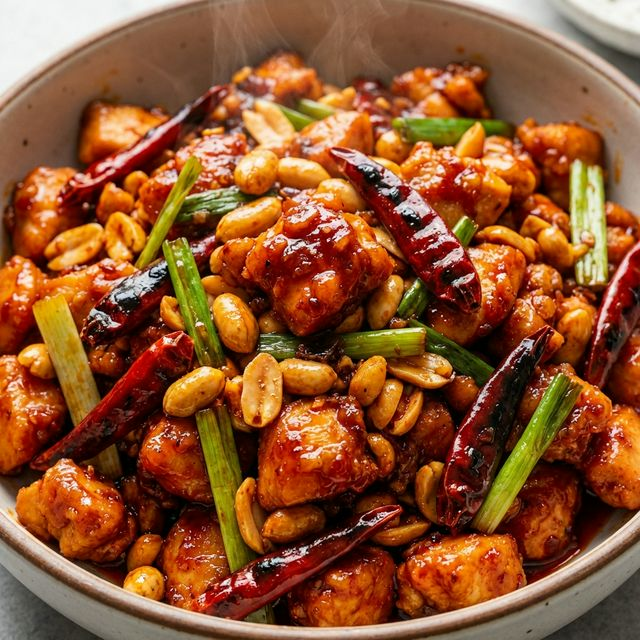

食材准备
- 主料： 鸡胸肉 300g
- 辅料： 油炸花生米 50g
- 调料： 干辣椒、花椒 适量
- 调料： 葱段、姜片、蒜片 适量
- 酱汁： 生抽 2勺, 老抽 1/2勺
- 酱汁： 香醋 2勺, 白糖 1.5勺
- 酱汁： 料酒 1勺, 淀粉 适量
烹饪步骤
鸡肉处理
鸡胸肉切成肉丁，加入少许料酒、盐、淀粉和油拌匀，腌制15分钟。
调配酱汁
将生抽、老抽、白糖、香醋、料酒、淀粉和少许清水调成芡汁。比例约是糖：醋 = 1:1 或根据口味微调。
滑炒鸡丁
锅中多放点油，大火烧热，下入鸡丁滑散至变色立刻盛出备用，保持鲜嫩。
炒香料
锅留底油，下入花椒、干辣椒段炸香，再放入葱姜蒜爆香。
出锅
倒入鸡丁和倒入调好的酱汁，大火快速翻炒，最后加入花生米颠匀即可出锅。